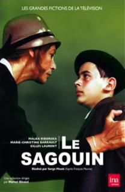
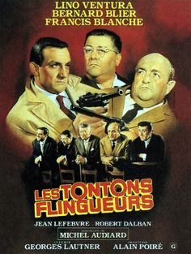

Hi guys, Basically, I am a problem solver! I was recently CSO and CMO of OPnGO, a French startup specialized in mobility, which I launched from scratch with friends of mine in 2016. I looove learning code and I am looking for a nice team with a nice project to develop after @LeWagon.
|  |
1972 - Le SagouinMais que ce cache-t'il derrière ce sagouin là ? |
|  |
Les tontons flingueurs" Le Mexicain ", truand notoire, est mourant. Il convoque alors son meilleur ami, Fernand, un autre truand quelque peu repenti, devenu propriétaire d'une usine très prospère de tracteurs, afin qu'il perpétue la bonne marche de ses affaires. Par ailleurs "Le Mexicain" confie à son ami sa fille Patricia, loin d'être... |